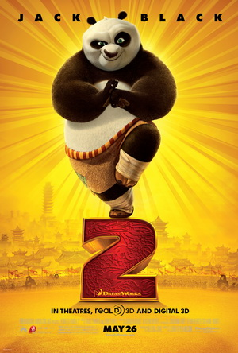
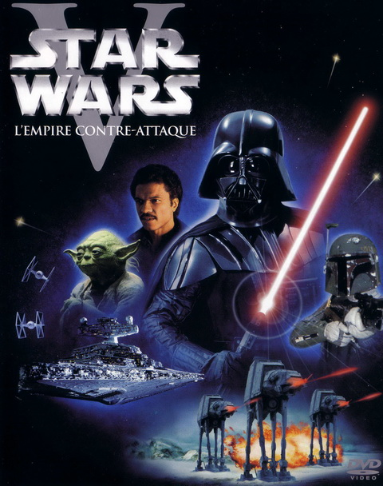

Alissa De Wannemaeker
Student at "Le Wagon"
Born in Belgium. I worked one year as a graphic designer at MAKS vzw. I want to learn coding to find a job as a programmer and one day work in the video games or science sector.
See where i study!
Born in Belgium. I worked one year as a graphic designer at MAKS vzw. I want to learn coding to find a job as a programmer and one day work in the video games or science sector.
See where i study!|  |
Kung-fu Panda 2Kung Fu Panda 2 is a 2011 3D American computer-animated comedy-drama martial arts film, directed by Jennifer Yuh Nelson, produced by DreamWorks Animation, and distributed by Paramount Pictures.1 It is the sequel to the 2008 film Kung Fu Panda and the second installment in the Kung Fu Panda franchise. |
|  |
The Empire Strikes BackThe Empire Strikes Back (also known as Star Wars: Episode V – The Empire Strikes Back) is a 1980 American epic space opera film directed by Irvin Kershner. Leigh Brackett and Lawrence Kasdan wrote the screenplay, with George Lucas writing the film's story and serving as executive producer. The second installment in the original Star Wars trilogy, it was produced by Gary Kurtz for Lucasfilm Ltd. and stars Mark Hamill, Harrison Ford, Carrie Fisher, Billy Dee Williams, Anthony Daniels, David Prowse, Kenny Baker, Peter Mayhew and Frank Oz. |
This page has been coded during the FullStack program @LeWagon. That was probably the best experience of my entire life.